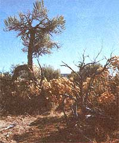
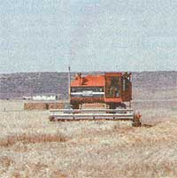
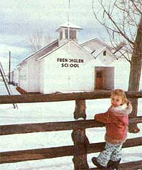
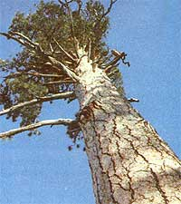
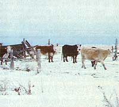
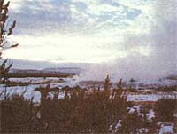
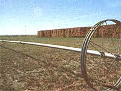
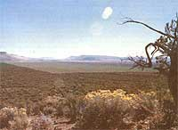

Mary Lou Harrsch tells of the struggles and rewards her family has found on . . .
Report from Them That's Doin'
W hen my husband and I sold our coastal Oregon house in 1978, we were afraid that we'd be unable to find an affordable farm without leaving our home state. Land promotions, calculated to entice wealthy retirees to the Northwest's seashores or fircloaked Cascades, had pushed land prices as high as $2,500 to $5,000 per acre throughout much of the Beaver State.
However, while scouring the Capital Press (a regional agricultural paper), we noticed an ad for eastern Oregon real estate . . . at only $85 to $200 per acre! It sounded too good to be true, but we packed up our two tots, hooked up a 16-year-old camp trailer, and headed for Burns . . . a small town on the sage-encrusted high plateau of inland Oregon.
Upon our arrival in the community (Burns's population is only 3,680), we obtained a copy of the local paper that confirmed the low land prices. Then-since we knew nothing about the climate, soil, or availability of water in this apparently arid country-we headed for the county extension office.
We were surprised to learn from the county agent that snow runoff creates a good water supply at no more than 100-200 feet below the ground. However, this same life-giving liquid also carries large amounts of surface salts that are deposited in lower, poorly drained flats, so we were cautioned to look for land with the high, silver-blue sagebrush that indicates better soil . . . while avoiding the bright green greasewood that thrives in alkaline soil.
The agent also revealed that boron could be a problem, if the substance were found in the water table in excess of four parts per million. The dissolved mineral is harmless to animals but builds up a toxicity in the soil that is eventually lethal to plants.
Armed with that little knowledge (and with estimates of well-drilling and electrical hookup costs), we then hit every real estate office in town . . . and were soon bouncing over back roads (or no roads at all) in search of a piece of "terra firma" with the qualities outlined by the county agent.
We rapidly discovered that the $85- to $125-per-acre land usually consisted of greasewooddotted alkali flats, but that -for between $150 and $200 per acregood sagebrush-covered property was available.
In our travels, we took every opportunity to talk to nearby residents and soon gathered additional tidbits of information that proved important in our final site selection.
We were told, for instance, that homes beyond a 20-mile radius of Burns aren't served by the school buses which take area children to the tiny (frequently one-room) schoolhouses dotting the desert . . . though the county will pay 12 cents per mile per "outland" family for transportation expenses to the nearest school.
Furthermore, only two high schools serve the over 10,000-square-mile Harney County, so secondary school students from outside the Burns district live in collegelike dormitories on a campus in the tiny burg of Crane. (In fact, Crane Union High School is the only public boarding school in the United States. There's no charge for room, board, or tuition . . . and the youngsters apparently love it!)
We also learned that the Bureau of Land Management offers permits for cutting juniperswhich can be used for fenceposts or in pole buildings, corrals, etc.-at a charge of only 7 cents per tree. And, though lodgepole pine is scarce, the species is sometimes included in timber sales in the Malheur or Ochoco National Forests . . . with four- to six-inch-diameter poles selling for 1/2 cents per lineal foot or 10 cents each, and larger pines (six to eight inches in diameter, and over 25 feet long) costing 2 cents per foot.
We were also reminded that cattlemen are still "kings" in the high desert . . . and thataccording to prevailing open range laws-we would have to fence the ranchers' free-roaming critters out of our vegetable gardens! It's also not unusual, as we soon learned, to wait half an hour for a modern cattle drive to plod up the highway. (A friend became impatient once and honked her horn at the brutes, whereupon a recalcitrant bovine up and kicked out her headlight!) On top of that, any driver who hits a cow on the highway must pay for the beast, regardless of whatever damage might be done to his or her vehicle or body!
In spite of all the eccentricities of Oregon's "last frontier", we finally-after a seven-month search-located our own piece of ground. The property fronts a gravel road and lies only two miles from Crane's schools.
Obtaining water was, of course, our first priority . . . and the well driller we hired struck a reliable supply of the precious liquid at a depth of only 28 feet. (He continued drilling to 72 feet to provide a backup reservoir.) This valuable necessity cost us $936 for drilling and casing, plus $91 for the state-required concrete seal. And since the ground freezes to a depth of about three feet in the winter, we also invested in a 1/2-horsepower, 220-volt, stainless steel submersible pump. That-along with the necessary wiring, plumbing, and an air-pressure tank-was an additional $389.
The local electric co-op provided a service line at no charge, and an electrician installed a 220-volt service boxwith fuses-for $364.
It wasn't long before we discovered that-even here at the edge of foreverthe bureaucracy enforces its land use regulations. After we filed a $100 permit application and dug two 2' X 2' X 6' test holes, an environmental quality inspector told us we'd need a 1,000-gallon septic tank-and 75 feet of drain line per bedroom-for an approved septic system. The tank, a distribution box, and pipe for a threebedroom system cost $557. A neighbor lent us his backhoe to dig the 36inch-deep by 18-inchwide trenches (in exchange for a little mechanical repair on the machine), but the drain field required 20 yards of crushed rock that we bought for $106.
With winter only a breath away (by then it was November), we selected a mobile home for our temporary dwelling . . . after receiving the required zoning approval and paying a $40 placement permit.
Now-with a roof over our heads-we turned our attention to putting a little bread on the table. We soon discovered that healthful, outdoor work is abundant here. Ranchers need fences built, cattle fed, irrigation lines moved, and hay cut and baled . . . while-in Januarythe BLM and the Forest Service take applications for temporary summer fire fighters, tree planters, and range aids. My husband also set about building up a small mechanical repair business and was soon offered carpentry jobs, too.
I found that the local Paiute silversmiths, Basque settlers, skydiving grandmothers, and trail-weary drovers provided an almost infinite variety of material for my camera and typewriter. I also began working two days a week as a stringer for a regional agricultural paper, and two more days as a darkroom technician for the local weekly.
As this article is being written, we're eagerly awaiting the results of a soil sample to determine the amount of fertilizer we'll need to raise next year's food supply. (Our nearest neighbor, who lives two miles away, received a soil test indicating a 91% deficiency in nitrogen, due to the absence of humus in this virgin soil.) The extension agent advised us to work in compost (which is readily available from winter-rotted haystacks) to boost both the humus and, with luck, the yield of our gardening efforts.
The high desert's 4,200-foot elevation keeps the summer temperatures in the comfortable 70's and 80's, and a list of vegetables recommended for this region's growing season includes an astonishing array: asparagus, beans, beets, broccoli, cabbage, carrots, cauliflower, sweet corn, cucumbers, eggplant, endive, kale, kohlrabi, lettuce, onions, parsley, parsnips, peas, peppers, radishes, rhubarb, rutabagas, spinach, squash, tomatoes, and turnips. (Unfortunately, a midJuly freeze occasionally wreaks havoc with eastern Oregon garden plots.)
The county agent also recommended strawberries, apricots, Bartlett pears, plums, pie cherries, and Yellow Transparent or Golden Delicious apples.
"But don't plant your fruit trees on the south slope," he cautioned, "because our late frosts will frequently damage an early bud break. The best thing you can do is preserve as many fruits and vegetables as you can during the good years, since you may lose your fruit setas well as most of your vegetable garden-as often as two years out of three."
As you can see, homesteading in eastern Oregon has its share of problems . . . and the region's whirling dust devils, freak frosts, and persistent alkali may discourage some wouldbe back-to-the-landers. But to us, the high desert offers a chance to step back into the past andperhaps-to help build a saner future.
|
 Sagebrush growth indicates the better soil in Oregon's high desert. |
 Grain harvests offer seasonal work for homesteaders. |
 High country children attend tiny schools . . . such as this one with only five students. |
|
 Towering lodge pole pines loom in Oregon's national forests. |
 The ""law of the range"" requires homesteaders to coexist with ranchers' cattle. |
 Oregon's desert is a ""hot bed"" of geothermal activity. Here, steam billows from a hot spring near Crane. |
|
 A wheel line irrigation system carries precious water to a fresh-mown field. |
 Rugged farmers have managed to carve out arable land amid the sage-encrusted desert plateaus. |
|